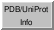

PDB/UniProt Info

PDB/UniProt Info retrieves annotations for
Protein Data Bank (PDB) entries using a web service provided by the
RCSB PDB.
Sequences are displayed in Multalign Viewer, and feature annotations from
UniProt
are mapped onto the sequences as
regions.
See also:
fetching UniProt data
There are several ways to start
PDB/UniProt Info, a tool in the Sequence category.
It is also available as the
UniProt
info... function in the
Model Panel.
The top part of the initial dialog lists the PDB chains
currently open in Chimera.
One or more chains can be chosen with the left mouse button.
Choosing a chain uses its PDB ID to retrieve structure annotations and any
PDB-UniProt mapping information (UniProt ID and residue number correspondences)
from the RCSB PDB.
The information is fetched as an XML file that can be cached and reused as needed
depending on the Fetch
preferences and whether the option to Ignore any cached data is checked.
A dialog will appear for entering the PDB ID if it cannot be
determined automatically. If the chain does not correspond to an
entry in the PDB, no information can be retrieved.
Sequence annotations are fetched from
UniProt; these are not cached.
- Structure annotations.
For valid PDB entries, the bottom part of the initial dialog will also show
entry title, primary literature citation, structure determination method,
source organism, and release date annotations from the RCSB PDB.
One or more entries can be chosen in the bottom part of the dialog.
Clicking Show PubMed page will display (in a browser window)
the primary citation abstract at
PubMed for each chosen entry.
- Sequence annotations.
Additional windows will appear for showing sequence feature annotations from
UniProt, if available.
Not all PDB chains are annotated with a UniProt ID, and a given
PDB entry may contain both chains with and without UniProt IDs.
For each chain with a UniProt ID:
- the amino acid sequence from UniProt will be displayed in the
Sequence
tool (also known as Multalign Viewer),
numbered according to the structure
- the UniProt sequence features will be listed as
regions
in the Multalign Viewer
Region
Browser; this dialog controls the display of regions in the
sequence
window. Full details are in the
Region
Browser documentation, but briefly:
- any parts of the sequence not present in the structure will be
shown as a pinkish outline region named missing structure...
- making a region Active
selects
the corresponding structure residues for subsequent operations with the
Actions menu
(in the example, the LDL receptor binding region was selected,
its atoms/bonds were shown, it was colored cyan and then
by heteroatom, and then the selection was cleared)
- making a region Shown displays it in the
sequence
window
- region colors can be changed by clicking the square
color wells
and using the
Color Editor;
one column of wells is for interior colors, the other for outline colors
- clicking Show UniProt page(s) will display the corresponding
web page(s) at UniProt
(example)
Other aspects of
sequence display
can be controlled in
Multalign
Viewer.
UCSF Computer Graphics Laboratory / October 2013
{kind=link}
{kind=link}
{kind=link}